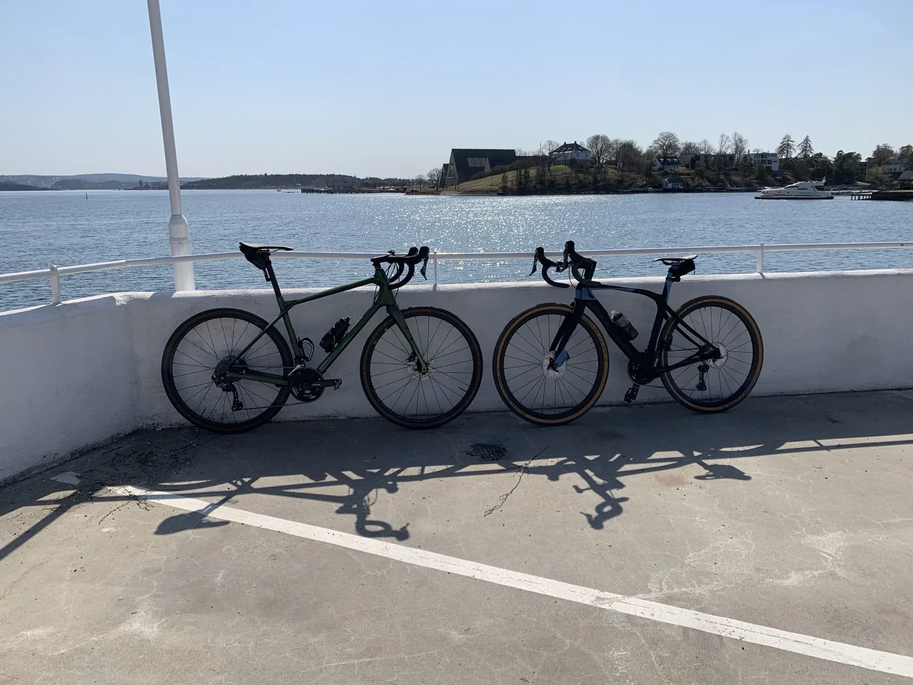

Every tour we run is private. That means your booking is your group — two people, six people, a family. Your guide rides with you and no one else. There are no strangers added to fill a coach, no itinerary set by a tour operator who has never met you.
We run eight routes around Oslo: city streets, the Oslofjord, specialty coffee neighbourhoods, Nordic modernist architecture, and the Nordmarka forest north of the city. All of them start at your hotel. All of them are shaped to your group — your pace, your interests, your day. That is what a bespoke tour actually means.
| Tour | Distance | Time | Terrain | From |
|---|---|---|---|---|
| Oslo City Highlights | 18 km | 2 hrs | Road, easy | NOK 890 |
| Bygdøy Peninsula | 28 km | 2.5 hrs | Road, medium | NOK 1 050 |
| Oslo Gravel Short | 13 km | 2 hrs | Gravel, easy | NOK 890 |
| Oslo Gravel Loop | 25 km | 3 hrs | Gravel, medium | NOK 1 090 |
| Oslo Coffee Tour | 22 km | 3 hrs | Road, easy | NOK 1 190 |
| Oslo Architecture Tour | 30 km | 3 hrs | Road, easy | NOK 1 310 |
| Nordmarka Forest Ring 4 | 45 km | 4 hrs | Gravel, medium | NOK 1 450 |
| Epic Marka Endurance | 85 km | 6 hrs | Gravel, challenging | NOK 2 475 |
A lot of tours advertise as "private" when they mean small group — six or eight strangers with a shared guide and a fixed pace. That is not what we do.
When you book with us, the guide is yours. The start time is yours. The pace, the stops, the conversation — all yours. If you want to linger somewhere, you linger. If your group includes kids or older riders, we adjust. If you want to push harder and cover more ground, that is also available. The tour is built around you — genuinely custom, not just a flexible version of a fixed product.
There is no one else on your tour. Ever.
Your guide meets you at your hotel or accommodation in Oslo. You do not need to find a meeting point, work out transport, or show up somewhere at 8am with your luggage still half-packed. Wherever you are staying in Oslo, we come to you.
If you are arriving from a cruise ship, we meet you at the terminal instead — see our shore excursion page for the full details on that.
Eivind and Haakon are both Oslo locals who have been riding these routes for years. They know the city, the forest and the fjord well enough to take you somewhere interesting rather than just somewhere obvious. Tours run in English and Norwegian.
Most visitors stay in the city centre and leave Oslo without finding the Nordmarka forest — a thousand square kilometres of pine and birch that starts fifteen minutes north. If you want to go beyond the obvious, mention it when you enquire. The forest tours start at the same price as the city tours and they tend to be the ones people remember.
Bike rental and helmet are optional add-ons, not included in the base price.
Use the form below. No fixed departure times — tours run by appointment. Tell us which route interests you, how many riders, and your preferred date. We reply within 24 hours and sort the rest from there.
Yes — fully private. Not "small group private" with a cap of 8 strangers. Your booking is your group and your group only. The guide rides with you and no one else. Maximum 8 riders per booking.
Yes. Your guide meets you at your hotel or accommodation in Oslo. There is no meeting point to find, no public transport to work out. Just tell us where you are staying when you book.
The Oslo City Highlights tour (18 km, 2 hours) is the most popular starting point — Opera House, Vigeland Park, Aker Brygge, flat roads, suitable for all fitness levels. If you want something away from the main tourist circuit, the Oslo Gravel Short takes you into the Nordmarka forest in two hours — an experience most visitors never find on their own.
Tours start at NOK 890 per person. The full range runs from NOK 890 (Oslo City Highlights or Oslo Gravel Short) to NOK 2 475 for the Epic Marka Endurance — an 85 km full-day ride deep into the Nordmarka forest. Bike rental is an optional add-on from NOK 349. All prices are per person.
Yes. Because every tour is private, the guide works at your pace. Want more stops for photos? Done. Prefer to push harder and cover more ground? Also fine. The route adapts to you, not the other way around.
No. Gravel bikes and e-bikes are available from NOK 349. Helmets are also available to rent. Just mention what you need when you enquire and it will be ready when your guide meets you.
Tours are private and guide availability is limited. Send your preferred date and we'll confirm within 24 hours.